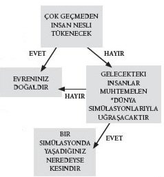

İnsan doğası, fizik kanunları ve teknolojik ilerlemenin yürüyüşü
1998’de sokakta rastladığınız hemen hemen hiç kimse bu soru üzerine bir an olsun düşünmezdi bile. 1999’un sonuna gelindiğindeyse, bu olasılık yerkürenin her yerinde milyonlarca insan tarafından tartışılıyordu. Peki neden? Çünkü Matrix’i izlemişlerdi. Filmin temel tartışması, Dünya üzerindeki insan nüfusunun besin tekneleri içinde yattığı, enerjilerinin bir makineler ırkı tarafından toplandığı yönündeydi.
Bu dehşet verici duruma tepki göstermeyelim diye beyinlerimize doğrudan bir bağlantı üzerinden erişmenin mümkün olduğu, simüle edilmiş bir gerçeklik içinde varoluşa sahip kılınmıştık. Bu durumda bütün bilinçli deneyimlerimiz bir bilgisayar programı ürünü olmaktan öteye gitmiyordu.
Duyulmamış bir fikir değildir bu. Descartes’tan bu yana filozoflar gerçeklik algımızın aldanmanın ürünü olup olamayacağını tartışmış, bilim-kurgu yazarları da benzer bir tartışmayı birçok kez kullanmışlardır. Örneğin 1966’da Philip K. Dick, insanların daha önce hiç yapmamış oldukları şeyleri tecrübe etmelerini sağlayan “takılabilir hafızalar” satın aldığı bir hikâye yayınlamıştı. TV dizisi Dr Who 1976’da Matrix denilen devasa bir bilgisayar sistemini tanıtmıştı; bu sistem de beden dışı deneyimleri mümkün kılmak üzere doğrudan beyne bağlanabiliyordu.
Fakat 1999’daki Matrix’in, beyaz perdeye tam zamanında bomba gibi düştüğü aşikardı. Gösterime girmesini izleyen birkaç yıl içinde, fizikçiler bu fikri bilimsel konferanslarda tartışmaya başlamışlardı; tartıştıkları her seferinde de filme göndermede bulunuyorlardı. Tuhaf gelebilir, ama bunun iyi bir sebebi vardı. Simüle edilmiş bir gerçeklik içinde yaşadığımız fikri, fizikte yeniden su üstüne çıkmış çok eski bir soruya verilmiş pek az akla yatkın cevaptan biriydi.
Gökbilimciler evrene baktıklarında tuhaf bir şey fark etmişlerdir. Bundan bahsetmeye neredeyse tereddüt ederler; fakat bu oturma odasına girmiş fil gibi bir şeydir, varlığının teslim edilmesi gerekir: Bu evren bizim için dikkat çekecek kadar iyidir. Bir parçasını değiştirdiğinizde, diyelim doğa kanunlarından birini biraz bozduğunuzda, bizler ortaya çıkmamış oluruz. O kadar ki sanki evren bizim yaşamamız amacıyla tasarlanmıştır. Eğer durum buysa bütün bunları tasarlayan tasarımcı, varoluşumuzu istemek için bir sebebi olan –belki iş, belki zevk– bir süper zekalı varlıklar ırkı olabilir mi?
Bu tabii ki büyük bir “eğer”dir; herhalde fizikteki en büyük “eğer”dir. Bu “eğer”le ilgili tartışmanın bir ismi bile vardır: “Antropik ilke.” Aslında bu yanıltıcı bir isimdir. Öncelikle bir ilke olmaktan çok bir iddiadır. Ayrıca antropik “insan merkezli” anlamına gelse de bu iddia aslında bununla ilgili değildir. Bu terimi ortaya atan astrofizikçi Brandon Carter, terimin yalnızca insan hayatını değil, genel olarak zeki hayatın varlığını kapsamasını amaçlamıştı.
Carter antropik ilkeyi, fizikçilerin yeni bir paradigmaya, Büyük Patlama’ya ayak uydurmaya çalıştığı sırada ortaya atmıştı. Evrenin bir başlangıcı olduğu fikri yaygın bir kabul görünceye dek fizikçiler, evrenin tarihinde böyle “özel” bir zaman gibi bir şeyin olamayacağını varsaymışlardı. Evren her zaman var olmuştu, her zaman da büyük ölçüde şimdi olduğu gibi var olacaktı.
Fakat 1963’te kozmik mikrodalga arkaplan ışınımının keşfedilmesiyle birlikte her şey değişti. Bu ışınımın yaratılış anının bir yankısı olarak kabul edilmesiyle birlikte, evrenin sayfa sayfa açılan, önemli olayların öne çıktığı bir tarihi olduğu düşünüldü. Sorun şuydu ki gökbilimin temel ilkelerinden biri her zaman, insanların uzayda da zamanda da özel bir yere sahip olmadığını ortaya koyan Kopernik ilkesi olmuştu. Büyük Patlama’yla birlikte Kopernik ilkesi tehdit altına girmiş oluyordu.
Özel Bir Evren mi?
Carter, ama, diyordu, önyargılarımız ne olursa olsun, evrenle ilişkimizde özel bir şey olduğunu teslim etmemiz gerekir. Bilim insanlarının katıldığı 1974’teki bir toplantıda “Durumumuz mutlaka merkezi konumda olmasa da bir ölçüde kaçınılmaz olarak ayrıcalıklıdır,” demişti. Bu ayrıcalık öncelikle, evrenin evrimini yöneten kanunlardan geliyordu.
Bu kanunların bize rahat bir varoluş sunmak için tasarlanmış olduğunun düşünülebilir olmasının birçok sebebi vardır. Bunların ilki kütleçekimin epey uygunluk gösteren kuvvetidir. Büyük Patlama sonrasında uzay genişliyor, bütün madde parçacıklarını birbirlerinden daha fazla uzaklaşmaya zorluyordu. Kütleçekim kuvveti ise bu genişleme aleyhine çalışıyordu: Parçacıkların karşılıklı kütleçekimi onları birbirine çekiyordu.
Bu sorunun çözülmesinin üç yolu vardır. İlkin, uzayın genişlemesi kütleçekimin çekim gücünü ezici bir biçimde aşmış olabilirdi. “Açık evren” olarak bilinen bu senaryoya göre, her madde parçacığı birbirinden uzağa itilir, sonuçta birbirlerinden giderek ayrılmaları kütleçekimin çekim gücünü daha bir zayıflatırdı. Bu durumda galaksiler, hatta belki yıldızlar da oluşmamış olurdu.
Peki ya kütleçekimin çekim gücü genişleyen uzayın itiş gücünü aştıysa? Bu durumda yıldızlar ve galaksiler kısa bir süreliğine oluşmuş olurdu; fakat kütleçekimin kuvveti, çabucak kendi içlerine çökmeleri ya da birbirleriyle çarpışmaları anlamına gelirdi, evren devasa bir kütleçekim çatırdamasıyla içe doğru çökerdi. Bu senaryoya “kapalı evren” senaryosu denir.
Üçüncü senaryo, “kritik evren” senaryosu ise itiş gücü ile çekiş gücü arasında hassas bir denge kurulmuş olmasını gerektirir. Bu senaryoda evrendeki maddenin yoğunluğu, Büyük Patlama’nın hemen ardından kütleçekimin çekiş gücünün evrenin genişlemesini neredeyse mükemmel bir biçimde etkisiz hale getireceği boyutlardadır. Kütleçekim maddeyi yıldızların oluşmasına, toplanıp galaksiler oluşturmasına yetecek kadar çeker. Kütleçekim kuvvetlerinin karşılıklı etkisi sayesinde yıldızlar ve galaksiler arasındaki genişleme yavaşlamış, evrene uzun ve verimli bir hayat bahşedilmiştir.
Kozmik Bir Tesadüf
Peki, ama bu senaryolar arasındaki farklılık nedir? Gökbilimciler rakamlarla uğraşmaya başladıklarında, önce kritik evrene bakarlar. Bunun için evrendeki maddenin yoğunluğunu incelemeleri gerekir; bu “Omega” dedikleri parametredir. Öyle anlaşılmıştır ki kritik evren senaryosunun gerçekleşebilmesi için Omega’nın, Büyük Patlama’dan bir saniye sonra belli bir değere sahip olması gerekir. Omega dudak uçuklatacak kadar küçük bir değerden –milyon milyarda bir– bir değer daha küçük ya da büyük olsaydı, hayatın bizim Güneş’imiz gibi genç bir yıldızı çevreleyen dostane ortamda yerleşiklik kazanmasına kalmadan ya evren kendi içine çöker ya da madde birbirinden çok çok uzaklara düşerdi.
Tek kozmik tesadüf bu değildir. Kütleçekimin kuvveti, uzayın baştaki genişlemesine karşı uygun; fakat hassas bir biçimde dengelenmiş, bizim Güneş’imiz gibi yıldızların oluşmasını mümkün kılmış olabilir. Ama bir de Güneş’in hidrojen atomlarını birleştirip helyum oluşturarak enerji salmasındaki verimliliği düşünün. Bu verimlilik yaklaşık 0,007’dir. Yani hidrojen atomlarının atomik kütleleri, yeni oluşmuş helyumun kütlesiyle kıyaslandığında, yüzde 0,7’lik bir kayba uğramaktadır. Dünya’da hayata güç veren de bu enerjidir; esasen ısı enerjisi.
Peki ya burada ne kadar hareket alanı bulunuyor? Bu dönüşümün verimliliğini artırmak, bir atomun çekirdeğindeki parçacıklar arasında biraz daha kuvvetli bir “tutkal” bulunuyor olmasını mümkün kılmak anlamına gelir. Bu verimlilik 0, 008’den fazla olsaydı, Büyük Patlama sırasında oluşmuş hidrojenin tamamı neredeyse hemen helyuma dönüşürdü ve yıldızlarda yanacak hidrojen kalmazdı. Başka bir deyişle ölü bir evren doğmuş olurdu. Öbür yöne gidip verimliliği 0,006’ya düşürecek olursak bu da nükleer tutkalın çok zayıf olması, o kadar ki helyumun hiç oluşmayacak, güneşin hiç tutuşmayacak olması anlamına gelirdi. Bu durumda da yine hayat mümkün olmazdı.
Sonra bir de elektrik kuvvetinin kütleçekimden yaklaşık 1040 kat büyük olması meselesi var. Bu durum atomlara temel özelliklerini kazandırır. Pozitif yüklü çekirdek ile yörüngede dönen negatif yüklü elektronlar arasında karşılıklı bir itiş vardır. Fakat aynı zamanda kütleçekimden kaynaklanan karşılıklı bir çekim de vardır. Aralarındaki oranı küçük bir miktar değiştirin, atomların temel niteliklerini değiştirmiş olursunuz, o kadar ki bu da yıldızların temel niteliklerini değiştirir; başka bir deyişle sağa sapın Güneş gibi yıldızların etrafında gezegenlerin oluşmayacağı bir evren yaratmış olursunuz. Sola sapın hayatın kimyasının altında yatan karbon atomlarını ortaya çıkaran süpernovaların varlığını tehdit etmiş olursunuz. Başka örnekler de vardır: Nötronun kütlesini yüzde 1 oranında azaltın, bir tane bile oluşmaz.
Evrenle Oyun Oynamak
Her şey ayarlanmış gibi görünüyor öyle değil mi? Büyük İngiliz astronom Fred Hoyle böyle düşünüyordu. Bir keresinde evrenin çok hayat-dostu olduğundan, o kadar ki “hileli bir iş” gibi göründüğünden yakınmıştı. Biri ya da bir şey, hayatın yaratılmasını kolaylaştırmak için fizik kanunlarıyla “oynuyordu.”
Peki, bir bilim adamı bu konuda ne yapar? Bunu Tanrı’nın yaptığını söylemenin –bu bilim adamlarını cevap arayışlarında hiçbir yere çıkarmaz– yanı sıra üç seçenek bulunmaktadır. İlk seçenek problemi tepe taklak çevirmektir. Evren birazcık olsun farklı olsaydı, biz burada oturmuş bu gibi şeyler hakkında kafa yoruyor olmazdık. Evren, elbette ki hayatın var olması için kesin bir dengeye sahiptir. Biraz farklı bir evrende var olamazdık. Böyle bir yaklaşım bizi, fizik kanunlarının bu önemli rakamlara farklı değerler verdiği başka evrenlerin varlığını değerlendirmeye zorlar. Bunlar ölü evrenler olmanın yanı sıra bilimsel bakımdan da çıkmaz sokaklardır. Onlara ulaşamayız; bu yüzden de evrenimizin hayat için hassas bir dengeye sahip olmasıyla ilgili soruya doyurucu bir yanıt bulamamış olmaya razı olmamız gerekir. İkinci yaklaşım da tıpkı birincisi gibi doyurucu değildir: Hassas ayarı doğaüstü bir tasarımcının, doğa kanunlarını aşan bir varlığın varlığına bağlarız. Burada da bu yaklaşımın doğru yaklaşım olup olmadığını ayırt etme yönünde bir umudumuz yoktur.
Üçüncü seçenekse, ona doğru gitmekte olduğumuz çözümdür: Evren varoluşumuza çok uygundur; çünkü bizim varoluşumuz için tasarlanmıştır. Bu durumda tasarımcılar tanrılar değildir. Bizim gibi varlıklardır. Ama teknoloji üzerindeki kontrolleri bakımından bizden çok daha ileridirler. Aslına bakarsanız o kadar ileridirler ki birbirinden inanılmaz iki şey birden yaratabilirler. Biri, bilinçlilik olarak değerlendirdiğimiz şeyi gösteren varlıklardır. İkincisi ise bu varlıkların bilinçleriyle tecrübe ettiği bir dünyadır. Simülasyon argümanı olarak bilinen mantıksal dizge budur. Bu argümanın parçalarını bir araya getiren ilk kişi filozof Nick Bostrom olmuştur. Bostrom 2001’de “Bir Bilgisayar Simülasyonunda mı Yaşıyorsunuz?” başlıklı makalesini elden ele dolaştırmaya başlamıştı. Bu soruya, büyük ihtimalle evet, diye cevap veriyordu.
Dünyayı Yeni Baştan Yaratmak
Bostrom’un argümanı bir hayli doğrudandır. Durun ve şu anda kullanmakta olduğunuz bilgisayar gücü üzerine bir düşünün. Bunu on yıl önce kullanabildiğiniz bilgisayar gücüyle karşılaştırın. Bir de yirmi yıl öncesiyle karşılaştırın. Şimdi bu düşündüklerinizi geleceğe tercüme edin. Eğer medeniyetimiz bu binyılda ayakta kalabilirse nüfusun elindeki bilgisayar gücü bugün bizim tahayyül edemeyeceğimiz büyüklükte olacaktır.
Şimdi bugüne geri dönelim. En popüler bilgisayar oyunlarından biri nedir? Simülasyon. Second Life adlı simülasyonun olağanüstü başarısını bir düşünün örneğin. İnsanlara alternatif bir varoluş fırsatı sunmaktadır; milyonların dört elle sarıldığı bir fırsattır bu. Başka simülasyon oyunları tanrıyı oynamanızı, başkaları üzerinde denetim kurmanızı ya da sadece kaderlerinin nasıl bir yola girdiğini izlemenizi mümkün kılmaktadır. Bu insan zihninin başka bir dünyada uğraşmayı sevdiği bir şeydir. Peki, işler neden bin yıl sonra daha farklı olsun?

SİMÜLASYON ARGÜMANI
Bostrom’un argümanı, şu üç önermeden birinin doğru olması gerektiği yönündedir. İlk önerme, insanların gerçeklik olarak tecrübe ettiğimiz şeyi yansıtacak bilgisayar simülasyonları – sanal gerçeklik – yürütebilecek derecede sofistike bir düzeye gelmeden, ezici bir ihtimalle tükenip gideceğini söyler. İkincisi, hayatta kalabilecek herhangi bir medeniyetin bu tür simülasyonlar yürütmesinin son derece ihtimal dışı olduğunu söyler. Üçüncüsü ise, böyle bir bilgisayar simülasyonunda yaşıyor olmamızın neredeyse kesin olduğunu söyler.
İlk önerme ihtimal dışı görünmektedir. Kendi kendimizi mutlaka ortadan kaldırmamızın ya da mutlaka ortadan kaldırılmamızın a priori bir sebebi yoktur. İkincisi daha da ihtimal dışı görünmektedir: Simülasyonlardan aldığımız haz, daha da fazla simülasyon gücüne sahip olduğumuzda bunu kullanmayacağımız varsayımında bulunmaya yer bırakmamaktadır. Böylece geriye üçüncü önerme kalır. Uzak bir gelecekten bahsettiğimiz dikkate alınırsa, bu uzak gelecekte “orijinal” evrenin her yerine dağılmış neredeyse sonsuz sayıda medeniyetin simülasyonlar yürüttüğü düşünülürse, bu orijinal evrende olup da bir simülasyonda olmamamız ihtimali nedir? Son derece küçüktür. Başka bir deyişle neredeyse kesinlikle bir simülasyon içinde yaşıyoruz.
Bunalıma girmeye neden olacak bir şey değildir bu; dünya her zaman olduğu kadar gerçektir. Dahası, evrenlerin doğaüstü tanrıların eliyle yönetildiği yönündeki fikirlerin aksine, simülasyon argümanı sınamaya açık olabilir. Kabul edilmesi gereken ilk şey, bu argümanın hassas ayarla ilgili soruyu yanıtlıyor olmasıdır. Bu simülasyonun yaratıcılarının simülasyonu yaratmak için bir sebepleri olması gerekir. Dolayısıyla, simülasyonların ezici bir çoğunluğunun yaratıcıları ve kullanıcılarına ilginç gelecek kadar iyi işliyor olması gerektiğini ileri sürmek akla yatkın görünmektedir. Bizim simülasyon ortamları yaratma tecrübemiz, bunun, bu ortamları “varoluşlarından” memnun varlıklarla doldurmak anlamına geldiğini düşündürmektedir; bu varoluştan duyulan memnuniyet de simüle edilmiş dünya ve sakinleriyle etkileşim kurma becerisini de gerektirme eğilimi göstermektedir.
Bu yüzden akla yatkın bir simülasyon, karmaşık hayat olarak addedeceğimiz şeyin gelişimini teşvik edecektir. Doğa kanunlarına baktığımızda gördüğümüz üzere, bu karmaşıklık sebebiyle, kurgu için hayli dar bir olasılıklar yelpazesi oluşur. Bu da en azından, hassas ayar için akla yatkın bir açıklama sunmaktadır. Şimdi böyle bir açıklamayı bilimsel olarak sınamanın bir yolunu bulmamız gerekir. Bu da yine, bizim simülasyonlar yaratma tecrübemizde bulunabilir.
Muhafazakâr Bilgisayar Kullanımı
Bilgisayar programcılığının temel kurallarından biri, değerli bilgisayar kaynaklarını israf etmemenizdir. Bu da herhangi bir simülasyonun sonsuz derecede rahat, pürüzsüz olmayacağı anlamına gelir. Simülasyon bilinçli avatarlarına etraflarındaki dünyada bir süreklilik duygusu verecek kadar iyi kurulmuş olacaktır; ama gereğinden fazla da iyi olmayacaktır. Bu da aniden yakından bakıldığında, programlamadaki açıkların ortaya çıkarılabileceği anlamına gelir.
Aslına bakarsanız bunu çoktan yapmış olabiliriz. Gerçekliğimizi tanımlamak için geliştirdiğimiz kuramların belirgin tutarsızlıklar gösterdiğini zaten biliyoruz. Örneğin, atomaltı ölçeklerde karşılaştığımız şeyleri tanımlıyormuş gibi görünen kuantum dünyası insan zihnine anlamsız geliyor. Kuantum dünyası parçacıkların birçok varlık göstermesini, aynı anda iki uzamsal konumda bulunmasını ya da aynı anda zıt yönlere hareket etmesini mümkün kılıyor.
Benzer bir biçimde, geniş kozmolojik ölçekleri düşünürken gerçekliği tanımlamak için kullandığımız görelilik kuramı da bir kara deliğin içi ya da Büyük Patlama anının geometrisi gibi en uç kozmolojik koşulları tanımlamayı başaramıyor. Kuramlarımızın, bu hayal kırıklığı yaratan sınırlamaları, gerçekliğimizin arkasındaki programlamanın sınırlarını yansıtıyor olabilir mi?
Değerlendirilmesi gereken başka kanıtlar da vardır. Modern bilimin en önemli amaçlarından biri fizik kanunlarını “birleştirmek”tir. Şu sıralar bunun ana dayanak noktası, görelilik kuramı ile kuantum kuramını birleştirmektir. Fakat bu, şimdiye kadar kimsenin arada çöpçatanlık edemediği bir izdivaç olmuştur. Bunun sebebi, böyle bir birleşmenin esasen imkânsız olması olabilir mi?
Bugünkü simülasyonları yaratırken programcılar ince ayrıntıları, örneğin bir kutup ayısının kürkündeki tüylerin hareketini şifrelemek için belli bir yöntem kullanırlar. Pastoral bir manzara görüntüsü yaratmak için kullanılan yöntemlerse farklıdır. Benzer bir şekilde bizim simülasyonumuzun yaratıcıları da bizim gerçekliğimizi farklı ölçeklerde programlamak için farklı yöntemler kullanmış olabilirler; bu yüzden de bu yöntemleri birleştirmeyi ummaktan kaçınmamız gerekir. Eğer mesele buysa bilimin uğradığı hayal kırıklıkları, varoluşumuzun doğasına ilişkin ipuçları olabilir.
Başka bir ipucu genetik şifremizde bulunabilir. DNA’mız kopyalandığında hata verme eğilimindedir. Düzeltilmeden bırakılırsa bu hatalar, herhangi bir türün ömrünün kısa olmasına, hatta belki de gelişemeyecek kadar kısa olmasına yol açmaya yeter. Genlerimizin işleyişine yerleştirilmiş hata düzeltme rutinleri olmasa hayatın simüle edilmiş hikâyesi hızla bozulabilirdi. Biz de kendi bilgisayar programlarımızda aynı şeyi yaparız: İşleri geri döndürülemeyecek şekilde bozulmadan yoluna koyacak hata düzeltme rutinleri yerleştiririz. Dolayısıyla simülasyonun programcılarının aynı yöntemleri kullanmak zorunda olduğunu düşünmek, büyük bir adım değildir.
Ciddi fizikçilerin ileri sürdüğü iddialardan biri, simülasyonda yapılan bir düzeltmenin fizik kanunlarında çatlaklar, hatta kırılmalar yaratabileceğidir. Bazı şeyler beklendiği gibi hareket etmeyebilir. Bu tür gözlemler yapmış mıyız peki? Aslına bakarsanız evet. Örneğin gökbilimciler, Dünya’ya gözlenebilir en uzak galaksilerden ulaşan ışığın fizik kanunlarının uzak geçmişte bir noktada bir kırılma geçirdiği yönünde işaretler verdiğini ileri sürmüşlerdir. Bu ışık 12 milyar yıl önce salınmıştır ve yolculuğu sırasında evrendeki maddeyle etkileşimi, akla yatkın bir biçimde beklenebileceğinden biraz daha farklı bir nitelik göstermektedir.
Öyle görünüyor ki bu gözlem, fizikteki sabitlerden birinin, ışık ve maddenin nasıl bir etkileşim içinde olacağına ilişkin ince ayrıntılara hükmeden sabitin geçmişte ince bir farklılık gösterdiği anlamına gelmektedir. Bu bir programlama hatası mıdır yoksa hata düzeltme rutininin bir parçası mıdır? Değişen sabitle ilgili bilimsel çıkarımlar yeterince sağlam görünse de bunun bir simülasyonda yaşadığımız fikrini desteklediği iddiası hâlâ tartışmalıdır.
Bu “sınamaların” hiçbiri mat edici bir ikna gücüne sahip değildir. Bir bilgisayar simülasyonunda yaşadığımız fikri ilginç bir fikirdir ve modern fiziğin en can sıkıcı problemlerinden birine birçok bakımdan son derece akla yatkın bir cevap verir. Kanıtlanacak mı yoksa yanlış olduğu mu ortaya konacak, bu sorunun cevabı henüz verilmemiştir. Bazı filozoflar, bir simülasyonda yaşadığımızdan kesinkes emin olmamızın tek yolunun, bu fikri yaygınlaştıran insanların, simülasyonun başarısının devamına bir tehdit oluşturdukları için gizemli bir biçimde “silinmesi” olacağını savunurlar; böyle bir savunmanın sebebi belki de bu cevabın verilmemiş olmasıdır. Başka bazı filozoflar aynı derecede oyuncu, ama daha cazip bir iddiada bulunmuşlardır. Bu keşifte bulunduğumuza göre, çok geçmeden gökyüzünü parça parça eden devasa bir mesaj almamız tümüyle mümkündür: “Tebrikler: Lütfen ikinci düzeye geçin.”